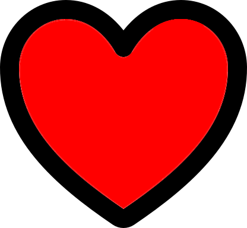

<ion-header>
  <ion-toolbar>
    <div style="text-align: center;">
      <ion-title>Cosas Feas</ion-title>
    </div>
    <ion-button color="dark" float-right routerLink="/home" class="Atras">
      <ion-icon slot="start" name="undo"></ion-icon>
      atras
    </ion-button>
    <div>
      <ion-button color="dark" center (click)=Showcamera()>
        <ion-icon slot="start" name="camera"></ion-icon>
        CAMARA
      </ion-button>
    </div>
  </ion-toolbar>
</ion-header>
<div class="banner">
  <div class="img">
    <ion-slides #foto (ionSlideDoubleTap)="likechange()" [options]="sliderOpts"
      (ionSlideDidChange)="switchLikeBotton()">
      <ion-slide *ngFor="let img of imagenes">
        
      </ion-slide>
    </ion-slides>
    <div style="margin:auto; width: 50%; padding: 10px;">
      <ion-button color="white" shape="round" fill="clear" color="dark" *ngIf="like" (click)="likechange()">
         <p>No me gusta</p>
      </ion-button>
      <ion-button colore="white" shape="round" fill="clear" color="dark" *ngIf="!like" (click)="likechange()">
         <p>Me gusta</p> 
      </ion-button>
    </div>
  </div>

</div>

<!-- Bubbles -->
<ion-spinner class="spinner" name="bubbles" *ngIf="isWaiting"></ion-spinner>